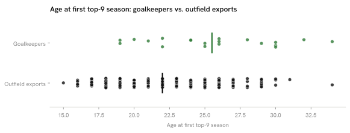

Summary · Question 11 of 14
German goalkeepers in the top-9 leagues per million and their age at the first top-9 season, 2025/26
20 German goalkeepers played ≥ 450 minutes in the top-9 leagues, 0.24 per million (rank 6 of 8), and their median age at the first top-9 season was 25.5 (n = 20) against 22 for outfield exports (n = 223).

Club tier: German top-9 goalkeepers, 2025/26
| Player | Club | League | Minutes | Club goals percentile |
|---|---|---|---|---|
| Bernd Leno | Fulham | ENG-Premier League | 3420 | 25 % |
| Noah Atubolu | Freiburg | GER-Bundesliga | 3060 | 61 % |
| Moritz Nicolas | Gladbach | GER-Bundesliga | 3060 | 19 % |
| Oliver Baumann | Hoffenheim | GER-Bundesliga | 3060 | 69 % |
| Marvin Schwäbe | Köln | GER-Bundesliga | 3060 | 56 % |
| Finn Dahmen | Augsburg | GER-Bundesliga | 3060 | 50 % |
| Alexander Nübel | Stuttgart | GER-Bundesliga | 3060 | 94 % |
| Timon Wellenreuther | Feyenoord | NED-Eredivisie | 2970 | 89 % |
| Mio Backhaus | Werder Bremen | GER-Bundesliga | 2880 | 11 % |
| Diant Ramaj | Heidenheim | GER-Bundesliga | 2790 | 28 % |
| Lars Unnerstall | Twente | NED-Eredivisie | 2790 | 78 % |
| Kevin Trapp | Paris FC | FRA-Ligue 1 | 1980 | 47 % |
| Michael Zetterer | Frankfurt | GER-Bundesliga | 1976 | 69 % |
| Daniel Batz | Mainz 05 | GER-Bundesliga | 1890 | 39 % |
| Manuel Neuer | Bayern Munich | GER-Bundesliga | 1859 | 100 % |
| Jonas Urbig | Bayern Munich | GER-Bundesliga | 1111 | 100 % |
| Janis Blaswich | Leverkusen | GER-Bundesliga | 931 | 83 % |
| Robin Zentner | Mainz 05 | GER-Bundesliga | 876 | 39 % |
| Nico Mantl | Arouca | POR-Primeira Liga | 720 | 67 % |
| Erdem Canpolat | Rizespor | TUR-Süper Lig | 630 | 72 % |
Goalkeeper production: German keepers, 2025/26
| Player | Club | League | Minutes | Goals against per 90 | Saves per 90 | Save % | Clean-sheet share |
|---|---|---|---|---|---|---|---|
| Bernd Leno | Fulham | ENG-Premier League | 3420 | 1.34 | 2.58 | 66.0 % | 24 % |
| Finn Dahmen | Augsburg | GER-Bundesliga | 3060 | 1.79 | 3.09 | 65.0 % | 15 % |
| Jonas Urbig | Bayern Munich | GER-Bundesliga | 1111 | 1.22 | 2.59 | 65.5 % | 43 % |
| Manuel Neuer | Bayern Munich | GER-Bundesliga | 1859 | 0.97 | 1.50 | 65.1 % | 32 % |
| Michael Zetterer | Frankfurt | GER-Bundesliga | 1976 | 1.50 | 2.82 | 65.3 % | 27 % |
| Noah Atubolu | Freiburg | GER-Bundesliga | 3060 | 1.68 | 2.94 | 65.1 % | 18 % |
| Moritz Nicolas | Gladbach | GER-Bundesliga | 3060 | 1.56 | 4.00 | 66.5 % | 38 % |
| Diant Ramaj | Heidenheim | GER-Bundesliga | 2790 | 2.16 | 3.23 | 64.5 % | 3 % |
| Oliver Baumann | Hoffenheim | GER-Bundesliga | 3060 | 1.53 | 2.88 | 65.3 % | 21 % |
| Marvin Schwäbe | Köln | GER-Bundesliga | 3060 | 1.85 | 2.71 | 64.5 % | 9 % |
| Janis Blaswich | Leverkusen | GER-Bundesliga | 931 | 0.87 | 3.96 | 66.2 % | 27 % |
| Daniel Batz | Mainz 05 | GER-Bundesliga | 1890 | 1.29 | 3.33 | 66.0 % | 19 % |
| Robin Zentner | Mainz 05 | GER-Bundesliga | 876 | 1.44 | 3.18 | 65.5 % | 0 % |
| Alexander Nübel | Stuttgart | GER-Bundesliga | 3060 | 1.44 | 3.15 | 65.8 % | 32 % |
| Mio Backhaus | Werder Bremen | GER-Bundesliga | 2880 | 1.75 | 3.12 | 65.2 % | 16 % |
| Kevin Trapp | Paris FC | FRA-Ligue 1 | 1980 | 1.32 | 2.55 | 65.4 % | 32 % |
| Timon Wellenreuther | Feyenoord | NED-Eredivisie | 2970 | 1.33 | 2.70 | 67.8 % | 27 % |
| Lars Unnerstall | Twente | NED-Eredivisie | 2790 | 1.13 | 2.48 | 67.9 % | 19 % |
| Nico Mantl | Arouca | POR-Primeira Liga | 720 | 2.25 | 3.25 | 66.0 % | 25 % |
| Erdem Canpolat | Rizespor | TUR-Süper Lig | 630 | 1.43 | 3.14 | 68.6 % | 29 % |
| Jonas Thomas Kersken | Arminia | GER-2. Bundesliga | 2949 | 1.50 | 2.69 | 66.9 % | 18 % |
| Ron-Thorben Hoffmann | BTSV | GER-2. Bundesliga | 2880 | 1.59 | 2.59 | 66.6 % | 19 % |
| Timo Horn | Bochum | GER-2. Bundesliga | 3060 | 1.38 | 3.21 | 67.7 % | 24 % |
| Marcel Schuhen | Darmstadt 98 | GER-2. Bundesliga | 3060 | 1.32 | 3.50 | 68.1 % | 29 % |
| Lennart Grill | Dresden | GER-2. Bundesliga | 540 | 1.67 | 2.17 | 67.0 % | 0 % |
| Tim Schreiber | Dresden | GER-2. Bundesliga | 2430 | 1.59 | 2.56 | 66.7 % | 18 % |
| Florian Kastenmeier | Düsseldorf | GER-2. Bundesliga | 2880 | 1.62 | 3.34 | 67.2 % | 12 % |
| Silas Prüfrock | Greuther Fürth | GER-2. Bundesliga | 1350 | 1.20 | 2.80 | 67.5 % | 27 % |
| Timo Schlieck | Greuther Fürth | GER-2. Bundesliga | 810 | 2.44 | 2.78 | 66.6 % | 11 % |
| Nahuel Noll | Hannover 96 | GER-2. Bundesliga | 3060 | 1.29 | 2.82 | 67.4 % | 29 % |
| Tjark Ernst | Hertha BSC | GER-2. Bundesliga | 2970 | 1.33 | 2.97 | 67.5 % | 33 % |
| Jonas Krumrey | Holstein Kiel | GER-2. Bundesliga | 1980 | 1.41 | 3.09 | 67.4 % | 23 % |
| Timon Weiner | Holstein Kiel | GER-2. Bundesliga | 1080 | 1.42 | 2.67 | 67.2 % | 33 % |
| Julian Krahl | Kaiserslautern | GER-2. Bundesliga | 2880 | 1.38 | 3.59 | 68.1 % | 28 % |
| Dominik Reimann | Magdeburg | GER-2. Bundesliga | 3060 | 1.71 | 3.15 | 66.9 % | 21 % |
| Jan Reichert | Nürnberg | GER-2. Bundesliga | 2970 | 1.36 | 3.03 | 67.5 % | 12 % |
| Dennis Seimen | Paderborn 07 | GER-2. Bundesliga | 3060 | 1.32 | 2.94 | 67.3 % | 26 % |
| Johannes Schenk | Preußen Münster | GER-2. Bundesliga | 2754 | 1.83 | 3.01 | 66.6 % | 13 % |
| Loris Karius | Schalke 04 | GER-2. Bundesliga | 2700 | 0.80 | 2.00 | 67.6 % | 43 % |
| Nico Mantl | Blau-Weiß Linz | AUT-Bundesliga | 1350 | 1.33 | 1.47 | 65.5 % | 27 % |
| Tom Hülsmann | Hartberg | AUT-Bundesliga | 2683 | 1.27 | 2.75 | 66.3 % | 30 % |
Goalkeepers per million, by country
How we know
0.24 per million; first top-9 season at a median age of 25.5 (n = 20), against 22 for outfield exports (n = 223); with this few goalkeepers the two medians cannot be compared.
As an analytics question In numbers: German goalkeepers with ≥ 450 minutes in the top-9 leagues, per million inhabitants, against outfield export age.
What we did We counted goalkeepers the same way we counted outfield players, then compared the age each group first reached one of the strongest leagues.
Sources 450-minute floor, 2025/26 rosters; goals against and saves per 90 are shrunk toward the league median with a prior worth 900 minutes, as every rate in the atlas; first season in a fetched top-9 table; players already there in 2020/21 are censored (60 % of the goalkeepers, 40 % of the outfield exports); a comparison of two pathways inside one nation, not a causal claim. First top-9 season needs no move for a Bundesliga keeper.
What this means
Germany had 20 goalkeepers with at least 450 minutes in the top-9 leagues. The age comparison rests on 20 goalkeepers, too few to tell two medians apart, and the per-million rank rests on counts of a few goalkeepers per country, where one player moves a country by several places.
What this does not show
Goalkeepers’ performance separated from their defence, goalkeepers in leagues outside the nine, and back-up goalkeepers below 450 minutes.
Data snapshot: FBref tables fetched 14 September 2026, snapshot commit 7cbfe45 · code: src/goalkeepers.py · status: exploratory, not pre-registered · all limitations